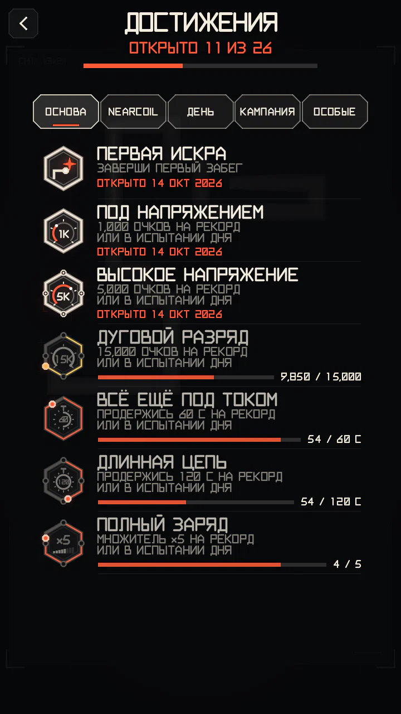
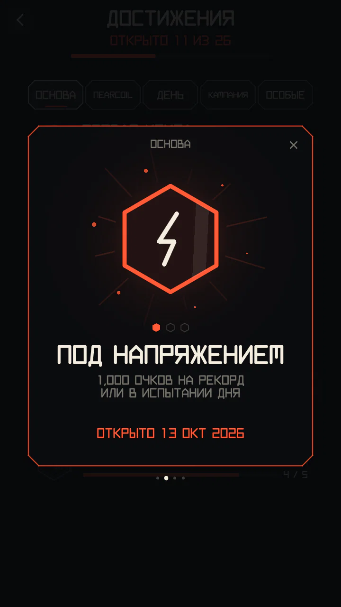
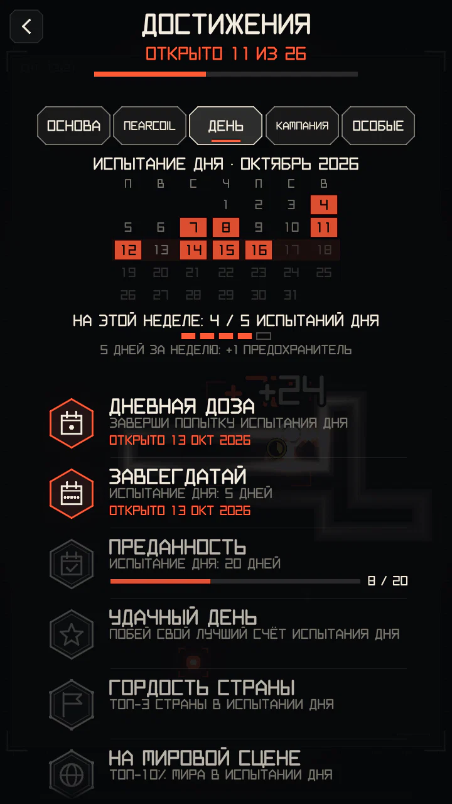
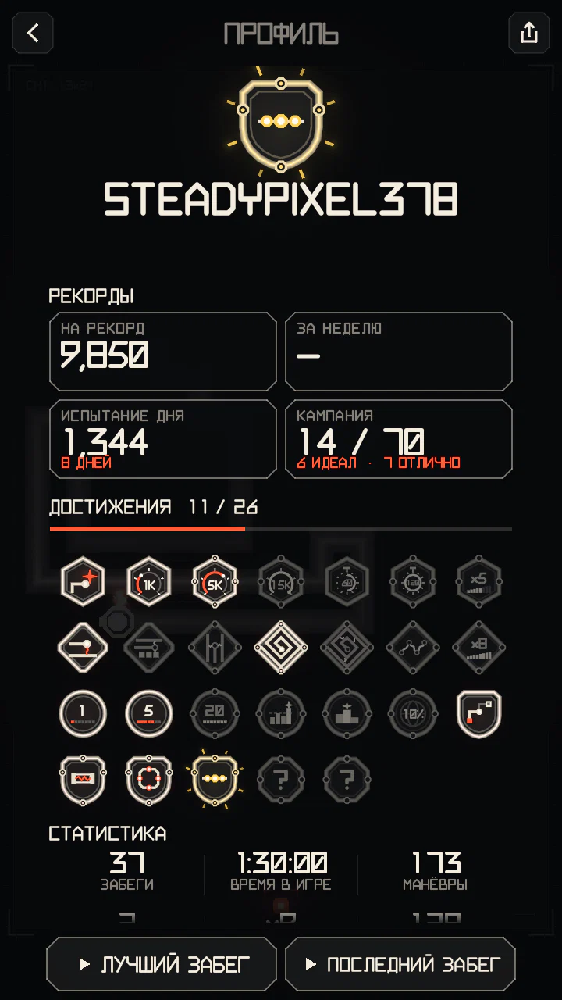

Достижения и профиль
Достижения отмечают то, что ты сделал в игре; твой профиль собирает их на одной странице вместе с рекордами, и открыть его может любой из таблицы лидеров.
Как они работают
- 34 достижений в 5 категориях: ОСНОВА, NEARCOIL, ДЕНЬ, КАМПАНИЯ и ОСОБЫЕ. Раздел ДОСТИЖЕНИЯ — в главном меню; вкладки листаются свайпом влево и вправо.
- Они проверяются в конце забега: новое появляется карточкой поверх итогов (три и больше — одной стопкой). Во время забега ничего не всплывает.
- Достижения за счёт, время и множитель засчитываются только в режимах НА РЕКОРД и ИСПЫТАНИЕ ДНЯ: уровни кампании платят по-другому, а некоторые начинаются с зарядом.
- У значков от одного до трёх ободков (уровень, ● в таблицах ниже); у третьего уровня ободок золотой. Два достижения скрыты и до получения видны как ???.
- Нажми на значок, чтобы рассмотреть его: что нужно, когда ты его получил или сколько осталось.
- Прогресс берётся из того, что игра уже считает, поэтому обновление никогда не отнимет достижение, а прежняя игра тоже засчитывается.




ОСНОВА
| Достижение | Что нужно | Уровень |
|---|---|---|
| ПЕРВАЯ ИСКРА | ЗАВЕРШИ ПЕРВЫЙ ЗАБЕГ | ●○○ |
| ПОД НАПРЯЖЕНИЕМ | 1,000 ОЧКОВ НА РЕКОРД ИЛИ В ИСПЫТАНИИ ДНЯ | ●○○ |
| ВЫСОКОЕ НАПРЯЖЕНИЕ | 5,000 ОЧКОВ НА РЕКОРД ИЛИ В ИСПЫТАНИИ ДНЯ | ●●○ |
| ДУГОВОЙ РАЗРЯД | 15,000 ОЧКОВ НА РЕКОРД ИЛИ В ИСПЫТАНИИ ДНЯ | ●●● |
| ВСЁ ЕЩЁ ПОД ТОКОМ | ПРОДЕРЖИСЬ 60 С НА РЕКОРД ИЛИ В ИСПЫТАНИИ ДНЯ | ●○○ |
| ДЛИННАЯ ЦЕПЬ | ПРОДЕРЖИСЬ 120 С НА РЕКОРД ИЛИ В ИСПЫТАНИИ ДНЯ | ●●○ |
| ПОЛНЫЙ ЗАРЯД | МНОЖИТЕЛЬ ×5 НА РЕКОРД ИЛИ В ИСПЫТАНИИ ДНЯ | ●●○ |
| ПРОГРЕВ | ИГРАЙ 7 ДНЕЙ, НЕ ОБЯЗАТЕЛЬНО ПОДРЯД | ●○○ |
| ПОСТОЯННЫЙ ТОК | ИГРАЙ 30 ДНЕЙ, НЕ ОБЯЗАТЕЛЬНО ПОДРЯД | ●●○ |
| УПОРСТВО | ИГРАЙ 100 ДНЕЙ, НЕ ОБЯЗАТЕЛЬНО ПОДРЯД | ●●● |
NEARCOIL
Манёвры — это ЗАЖИМ, СКВОЗЬ и ИГЛА (см. Сближения и манёвры); цепочка — несколько манёвров подряд.
| Достижение | Что нужно | Уровень |
|---|---|---|
| НА ВОЛОСОК | ПЕРВЫЙ ЗАЖИМ, СКВОЗЬ ИЛИ ИГЛА | ●○○ |
| ИГОЛЬНОЕ УШКО | 5 МАНЁВРОВ ЗА ОДИН ЗАБЕГ | ●○○ |
| ПО ЛЕЗВИЮ | 15 МАНЁВРОВ ЗА ОДИН ЗАБЕГ | ●●○ |
| ПЛОТНЫЙ МОНТАЖ | 50 МАНЁВРОВ ВСЕГО | ●●○ |
| МАСТЕР ВИТКА | 250 МАНЁВРОВ ВСЕГО | ●●● |
| ЦЕПНАЯ РЕАКЦИЯ | 3 МАНЁВРА В ОДНОЙ ЦЕПОЧКЕ | ●●○ |
| БЕЗ СТРАХА | МНОЖИТЕЛЬ ×8, ВЫШЕ НЕ БЫВАЕТ | ●●● |
ДЕНЬ


Вкладка открывается календарём месяца: дни с пройденным испытанием светятся, сегодняшний обведён. Под ним — недельная цель: 5 разных дней за неделю дают +1 предохранитель. Для достижений за место в таблице нужна достаточно большая таблица: не меньше 5 игроков в стране и 20 в мире.
| Достижение | Что нужно | Уровень |
|---|---|---|
| ДНЕВНАЯ ДОЗА | ЗАВЕРШИ ПОПЫТКУ ИСПЫТАНИЯ ДНЯ | ●○○ |
| ЗАВСЕГДАТАЙ | ИСПЫТАНИЕ ДНЯ: 5 ДНЕЙ | ●○○ |
| ПРЕДАННОСТЬ | ИСПЫТАНИЕ ДНЯ: 20 ДНЕЙ | ●●○ |
| СИЛА ПРИВЫЧКИ | ИСПЫТАНИЕ ДНЯ: 50 ДНЕЙ | ●●● |
| УДАЧНЫЙ ДЕНЬ | ПОБЕЙ СВОЙ ЛУЧШИЙ СЧЁТ ИСПЫТАНИЙ ПРОШЛЫХ ДНЕЙ | ●●○ |
| ГОРДОСТЬ СТРАНЫ | ТОП-3 СТРАНЫ В ИСПЫТАНИИ ДНЯ | ●●● |
| НА МИРОВОЙ СЦЕНЕ | ТОП-10% МИРА В ИСПЫТАНИИ ДНЯ | ●●● |
КАМПАНИЯ
| Достижение | Что нужно | Уровень |
|---|---|---|
| КОНТАКТ ЕСТЬ | ПРОЙДИ ПЕРВЫЙ УРОВЕНЬ КАМПАНИИ | ●○○ |
| ЧИСТАЯ РАБОТА | ПРОЙДИ С ПЕРВОЙ ПОПЫТКИ НОВЫЙ УРОВЕНЬ ГЛАВЫ 2 ИЛИ ДАЛЬШЕ | ●●○ |
| ЦЕПЬ ЗАМКНУТА | ПРОЙДИ ВСЕ УРОВНИ ГЛАВЫ | ●●○ |
| ИДЕАЛЬНЫЙ КОНТАКТ | ПОЛУЧИ ИДЕАЛ НА УРОВНЕ | ●●● |
| ПОЗОЛОТА | ПОЛУЧИ ИДЕАЛ НА ВСЕХ УРОВНЯХ ГЛАВЫ | ●●○ |
| ВСЯ СХЕМА | ПРОЙДИ ВСЕ 70 УРОВНЕЙ КАМПАНИИ | ●●● |
| ВОЕННАЯ ПРИЁМКА | «ОТЛИЧНО» ИЛИ ИДЕАЛ НА ВСЕХ 70 УРОВНЯХ | ●●● |
| СВЕРХПРОВОДНИК | ИДЕАЛ НА ВСЕХ 70 УРОВНЯХ | ●●● |
ОСОБЫЕ
| Достижение | Что нужно | Уровень |
|---|---|---|
| ТАК БЛИЗКО | РАЗБЕЙСЯ ЗА 3 С ПОСЛЕ НОВОГО РЕКОРДА скрытое: до получения видно как ??? | ●●○ |
| ПОСЛЕДНИЙ ШАНС | УЛУЧШИ РЕКОРД ДНЯ В ПОСЛЕДНЕЙ ПОПЫТКЕ скрытое: до получения видно как ??? | ●●○ |
ПРОФИЛЬ


- Свой профиль открывается кнопкой ПРОФИЛЬ в главном меню. Чужой — из любой таблицы лидеров: нажми на строку игрока, затем ПРОФИЛЬ.
- На странице: лучший значок игрока как эмблема, ник и страна, с какого времени он играет и его лига; рекорды (НА РЕКОРД с местом в мире, за неделю, ИСПЫТАНИЕ ДНЯ и число дней, КАМПАНИЯ с медалями); все достижения с датой получения; статистика.
- Рекорды берутся из таблиц лидеров. Достижения, медали кампании и статистику сообщает игра самого игрока: они показываются как есть и ни на какой рейтинг не влияют.
- Кнопка «поделиться» превращает страницу в картинку. ПОЖАЛОВАТЬСЯ НА ИМЯ в чужом профиле — жалоба на имя.
- У игроков, убранных из таблиц, публичной страницы нет.